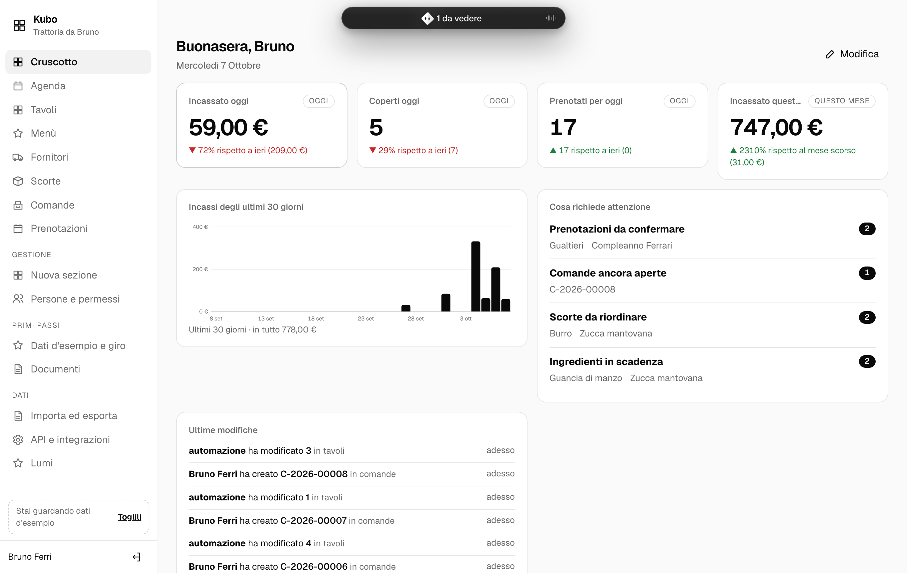
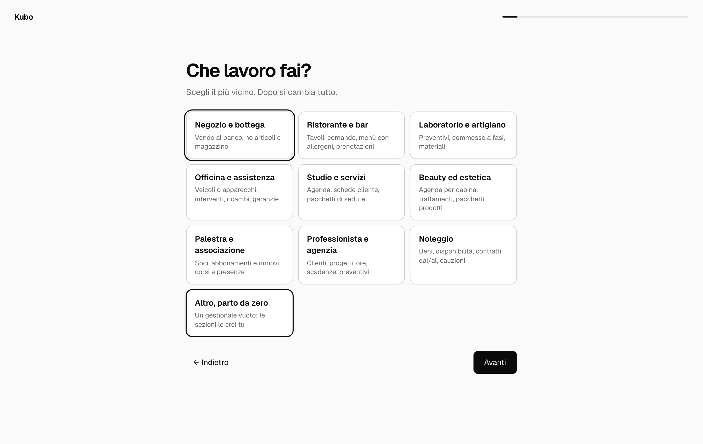
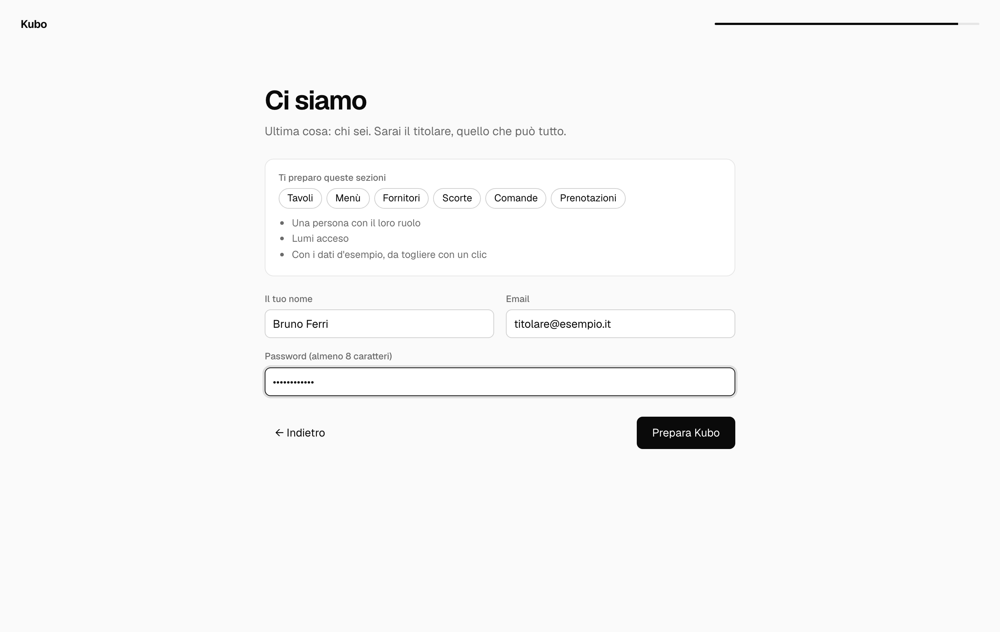
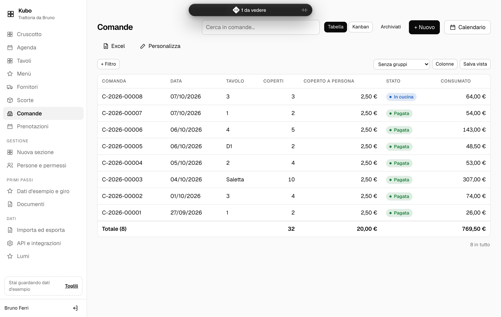
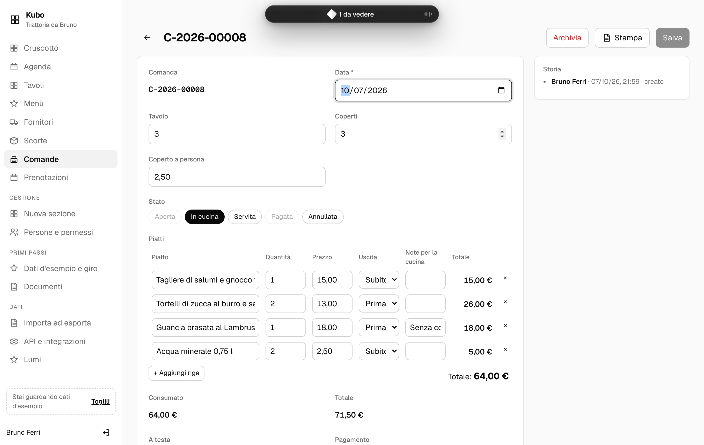
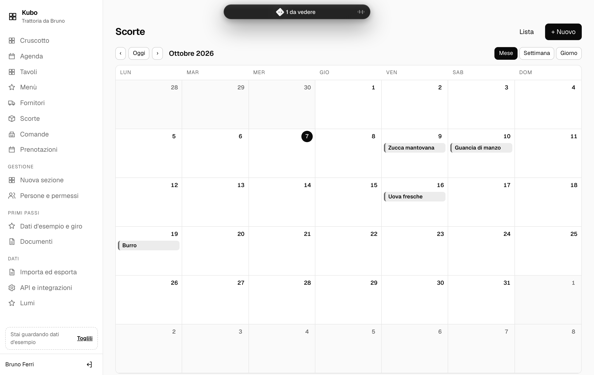
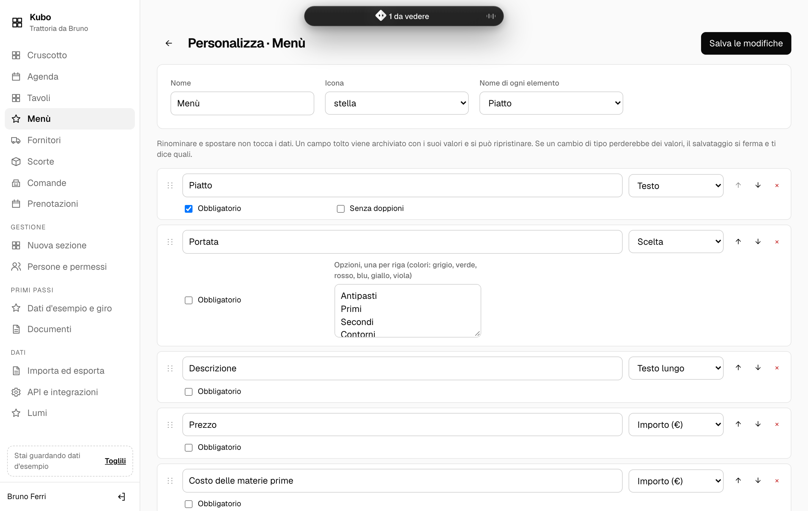

Il gestionale che monti a modo tuo.
Rispondi a dieci domande sul tuo lavoro e Lumi prepara clienti, vendite, agenda e magazzino. Poi lo cambi da solo, senza scrivere codice. I dati restano su un tuo computer.

Il cruscotto di una trattoria, con i dati d'esempio che Lumi mette al primo avvio.
Tre cose che gli altri non fanno.
Lumi non ti chiede di adattarti a un programma pensato per qualcun altro. Parte dal tuo settore e si piega al tuo modo di lavorare.
Lo monti tu
Sezioni, campi, stati, formule alla Excel in italiano, automazioni e permessi si cambiano dall'interfaccia. Rinomini un campo e i dati restano. Ne togli uno e si archivia, non si perde.
I dati stanno da te
Un solo file su un PC o un piccolo server in ufficio. Gli altri si collegano dal browser della rete locale, anche dal telefono. Funziona senza internet e il backup è una copia di quel file.
C'è l'assistente
Si chiama anche lui Lumi, e gli chiedi le cose a parole: «quanto ho incassato questa settimana?», «aggiungi la taglia agli articoli». Legge con i tuoi permessi e propone; ogni modifica la confermi tu.
Pronto in tre minuti.
Niente manuale da leggere prima. Una domanda per schermata, e quello che non ti serve resta spento.
- Dieci domandeChe lavoro fai, se hai un magazzino, se prendi appuntamenti, se emetti fatture, chi lavora con te.
- Lumi si preparaSceglie i modelli, spegne i campi inutili, crea le persone con il loro ruolo e il cruscotto giusto.
- Provi con i dati d'esempioClienti e movimenti finti ma credibili. Quando sei pronto li togli con un clic: la prima vendita vera è la numero 1.


Un punto di partenza per ogni mestiere.
Ogni modello ha le sue sezioni, le formule, le automazioni e un cruscotto suo. Si possono combinare: un'officina che fa anche preventivi, una palestra che emette fatture.
Fatto per lavorarci tutto il giorno.
Bianco e nero, caratteri leggibili, niente pubblicità né finestre che chiedono di aggiornare a pagamento. Il tema scuro segue quello del computer.




Scarica e installa.
Serve Node.js 22.5 o più recente, che è gratuito e si installa in un minuto da nodejs.org. Lumi non ha altre dipendenze e non si compila.
Sul computer dell'ufficio
Scarica il codice, avvialo, apri il browser. Al primo avvio parte l'avvio guidato.
# una volta sola git clone https://github.com/W1kicartel/Lumi cd Lumi # ogni volta npm start # http://localhost:4380Oppure scarica lo zip
Per tutta la squadra
Avvialo con --rete: gli altri PC e i telefoni dell'ufficio si collegano all'indirizzo che Lumi stampa. Ognuno entra con la sua email e vede quello che il suo ruolo permette.
npm start -- --rete
# dalla rete: http://192.168.1.20:4380
I dati sono tutti in dati/lumi.db. Per il backup basta copiarlo; da Lumi si scarica anche un backup completo con un clic.
Lumi o un gestionale a canone?
Un confronto onesto. Non sempre Lumi è la scelta giusta.
| Lumi | Gestionale a canone | |
|---|---|---|
| Costo | Gratis, per sempre e per quante persone vuoi | Un canone mensile, spesso per utente o per modulo |
| Dove stanno i dati | Su un tuo computer, in un file che puoi aprire e copiare | Sui server del fornitore |
| Senza internet | Funziona, in tutta la rete dell'ufficio | Di solito si ferma |
| Cambiarlo | Da solo: campi, sezioni, formule, automazioni, permessi | Quello che prevede il prodotto, o personalizzazioni a pagamento |
| Fattura elettronica | Prepara il file FatturaPA; lo mandi allo SDI con il portale gratuito o il tuo intermediario | Spesso l'invio è compreso |
| Assistenza | Documentazione e comunità; per l'installazione serve un minimo di dimestichezza o un tecnico di fiducia | Un numero da chiamare |
| Se cambi idea | Esporti tutto in Excel o CSV, e il codice resta tuo | Dipende dal contratto |
Quando non sceglierlo. Se vuoi che qualcuno risponda al telefono quando qualcosa non va e non hai nessuno che sappia installare un programma, un servizio a canone oggi ti dà più tranquillità. Se ti serve la contabilità completa (prima nota, bilancio, F24), Lumi non la fa: la lascia al tuo commercialista.
Domande frequenti
È davvero gratis?
Sì. Lumi è open source con licenza MIT: lo usi, lo copi e lo modifichi anche per lavoro, senza pagare niente e senza limiti di utenti. L'unico costo possibile è l'assistente, se decidi di accenderlo: usa Claude con una chiave tua, a consumo.
Serve internet?
No. Lumi gira su un computer dell'ufficio e gli altri si collegano dalla rete locale. Internet serve solo all'assistente, e solo se lo accendi.
Lo posso usare dal telefono?
Sì, dal browser del telefono collegato al Wi-Fi dell'ufficio: l'interfaccia si adatta allo schermo piccolo.
L'assistente manda i miei dati fuori?
Solo se lo accendi e gli dai una chiave di Claude: allora le domande che fai, e i dati che servono a rispondere, passano da Claude. L'assistente vede solo quello che il tuo ruolo può vedere, e non cambia niente senza il tuo «Conferma». Si spegne con un clic.
Posso portarci i dati che ho già?
Sì. Da «Importa ed esporta» carichi un file Excel o CSV, abbini le colonne ai campi e Lumi ti mostra l'anteprima prima di importare.
Fa la fattura elettronica?
Con il modello «Fatture» numera le fatture per anno, calcola IVA, ritenuta e bollo e prepara il file FatturaPA. Il file lo mandi allo SDI dal portale gratuito dell'Agenzia delle Entrate o dal tuo intermediario; se l'intermediario è fra le integrazioni del catalogo, Lumi glielo passa da solo.
E se sbaglio a personalizzare?
Nessuna modifica perde dati. Un campo tolto si archivia con i suoi valori e si ripristina; un cambio di tipo che perderebbe valori viene fermato e ti dice quali. Ogni modifica finisce nella storia: chi, quando, prima e dopo.
I dati d'esempio si mescolano ai miei?
Finché ci sono li vedi nelle stesse liste, con un promemoria in basso. Lumi sa quali sono e li toglie tutti con un clic, anche le righe nate dalle automazioni; quello che hai inserito tu resta, e dove non c'è ancora niente di tuo la numerazione riparte da 1.